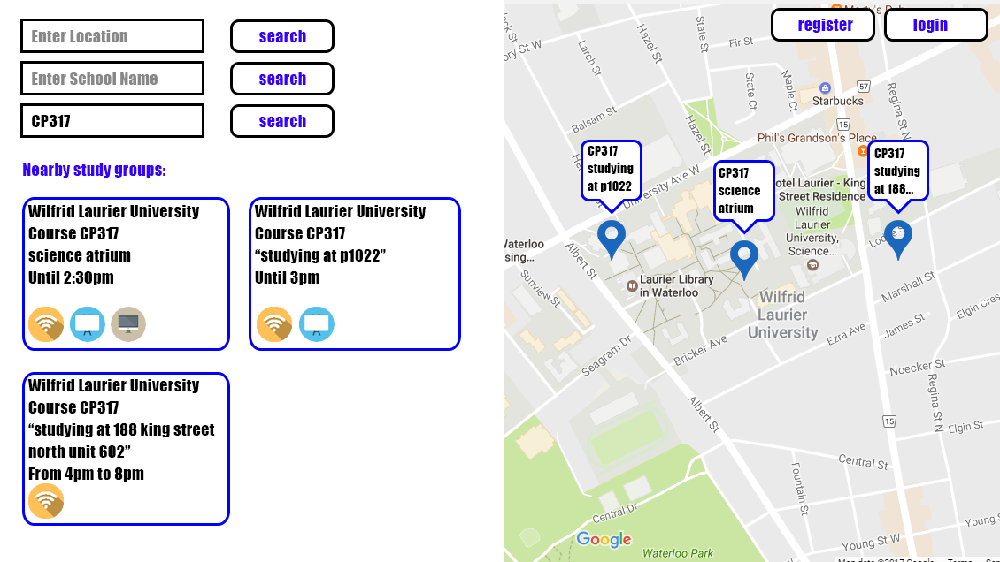

Study Space
Requirements Document
<<<<<<< HEAD
Version 2.0 - 8/9/2017
=======
Version 1.9 - 8/8/2017
>>>>>>> 1ec22a4c0b152bd362a6500d7195e886e7d9dd1c
Introduction
<<<<<<< HEAD
Study Group Finder is a web-based application that allows students in any school to post and find study group locations. The purpose of this application is to allow students to find study groups with ease. By doing so, students are able to help each other achieve their academic goals as well as make new acquaintances.
=======
Study Space is a web-based application that allows students in any university to post and find study group locations. The purpose of this application is to allow students to find study groups with ease. By doing so, students are able to help each other achieve their academic goals as well as make new acquaintances.
>>>>>>> 1ec22a4c0b152bd362a6500d7195e886e7d9dd1c
Purpose
This document outlines the requirements of the Study Space application and describes its features. During the creation of the application, everyone involved refers to this document to understand the requirements as well as use it as the basis for their work.
Scope
The software being produced is a website called Study Space. This software is used by students to search for and message people nearby who are studying or doing homework. The objective is to bring students together so they may more easily achieve their academic goals.
Document Lexicon
Definitions
Beacon Start Time: The time the Beacon creator will arrive at the study location.
Beacon: A study location and the details of that study group, such as the course code, location, and start time of the study session.
Beacon Description: A user-entered description of the Beacon, where they state specifics of the location, such as the room number, start and end time, and what they be working on.
Beacon Preview: The Beacon as it appears on the map. When a user moves their mouse over the beacon, this icon gives a small preview about the given beacon’s description. For a more detailed description of the location the user may go to the left side of the page.
Chat: Each user profile, course page, and beacon includes a discussion where users can post messages to comment or ask questions about the topic.
Course: A course taken at a school represented by a course code, ex. CP317.
Beacon End Time: The time the Beacon creator will leave the study location.
Google Maps API: An API provided by Google which displays the map on the screen, and allows us to add Beacon markers to the map. It also allows us the get the position on the map in Longitude and Latitude, and then convert it into a user-friendly address string.
Guest User: A user who has not created an account or logged in.
Notifications: A message informing the user of a recent event, such as a beacon for a course they're in has been created or another user started a private chat with them.
Registered User: A user who has created an account and logged in.
Tag: A small icon which appears on the left side of the beacon display. This tag provides detailed information about a group's location to the user, such as if the location takes place in a computer lab or if the location has a whiteboard.
User: Someone who accesses the website, who we assume is a student.
User Profile: A page with personal details about the assumed student. The profile provides functionality such as beacon invites, messaging, and course lists.
Acronyms and Abbreviations
API: Application Program Interface. External software packages used in building our application.
GUI: Graphical User Interface. This is the interface which the user interacts with. It consists of traditional buttons and bars as well as more unique graphics, such as the map.
SRS: Software Requirements Specifications. This is the document which has all requirements and standards contained.
References
This SRS document is based on IEEE Std 830-1998.
Overview
The rest of this document contains details on the appearance and functionality of the Study Space program.
Overall Description
Product Perspective
<<<<<<< HEAD
Study Group Finder is a web based application with two major components: front end and back end. It also implements the Google Maps API in order to display a map to the user. It takes input from the user to determine relevant beacons to display to them.
User Interfaces
The main view has a map taking up the right side of the web application. The left half of the display has three search bars at the top, which can be used to sort based on location, school name, and course code. There will also be a series of tags for the user to further filter the beacons. Below that, there is a scrollable list displaying boxes showing detailed information of all the nearby beacons. These boxes are ordered by their distance from the user and includes various details including end time, room number, and the course code. There is a chat box for each beacon, which is initially hidden but can be opened by the user. In the top right of the screen, there is a button that brings a window for the user to login or register an account. This window also includes the option for a user to reset their password if they have forgotten it. Notifications and invites appear in the same fashion as chat boxes.
Each user has a profile, which displays information such as the courses they are enrolled in and a brief description about themselves. The user is able to change the view to show a list of courses at their school or a list of user profiles of other people in their courses. Clicking a profile from the user list takes the user to that user's profile. While viewing the user's profile, they are able to invite the user to a beacon or start a chat with the user.
=======
Study Space is a web based application with two major components: front end and back end. It also implements the Google Maps API in order to display a map to the user. It takes input from the user to determine relevant beacons to display to them.
User Interfaces
The user interface consists of 6 main windows. These include the Home Window, Login Window, Beacon Creation Window, User Discovery Window, Chat Window. Initially, when a user accesses the site, they will be in the Home Window.
The Home Window has a map on the right side, which allows you to view and select beacon locations. It has fields for the user to input school, course ID, location, date/time, and tags. Along the left side, there are two lists, including a My Beacons list and a Suggested Beacons list. Each Beacon includes details such as date, course code, location, and tags. It includes a timer bar which advances from left to right and changes from green to red as the Beacon gets closer to starting. If the Beacon is in My Beacons, the button will read Remove Beacon. If the Beacon is in Suggested Beacons, the button will read Join Beacon. Two tabs, Map and User Discovery are on the top
The Login Window has two fields along the left which allow registered users to enter their username and password then Press a Login button. There is also a Remember Me checkbox and a link to recover your lost password. On the right side, a new user can enter in their details into four fields for email, confirm email, password, confirm password. Underneath these fields is the Register button or the Sign in as Guest button.
The Chat Window is a small window at the bottom right corner of the screen. When minimized, the tab includes the user's name, and their status.
The Beacon Creation Window takes the place of the Beacon lists on the Home Window. On this window, users enter the details of their Beacon such as School, Course ID, Location, Date/time, tags, and a short description. Below the fields are the buttons to Cancel or Create Beacon.
The User Discovery Window replaces the map and the lists of the Home Window. Centred in the window is a list of students which can be navigated with a scroll bar. ON the top right, there is a navigation bar to search for a name.
The Profile Page Window replaces the map and the lists of the Home Window. It contains the details of their User Profile and includes details such as their name, display picture, and buttons Invite to Beacon and Chat. Along the right side, there are details about themselves including School, a description, and their classes they're enrolled in.
>>>>>>> 1ec22a4c0b152bd362a6500d7195e886e7d9dd1c
Sample GUI

Product Functions
Every user has the option to create a group or join a group. When a user creates a group they specify attributes of the group, such as the course code, where the group is located, and how long the group will be there. If a user is registered for the same course, they receive a notification mentioning that a beacon in that course has opened up. If a user wishes to join a group, they are able to select a group by looking at a map or by scrolling through a list of nearby beacons. The user is able to search for nearby groups by location, and filter these groups by the school they attend and the course code/course page of the class they are studying. The user who has created a group can drop a pin on the map and other users can join and go to that location. Users have the option to register an account and sign in to the website, which allows them to view and edit their beacons from any device they sign in with. Users are able to open a chat box for each beacon and post messages to the creator of the beacon and anyone else attending that beacon. Users are able to view the user profiles of other users, which allows them to invite users to their beacon or start a private chat with the user.
User Characteristics
The intended audience are students with the technical expertise to use a website.
Constraints
Multiple users must be able to access the website at once. To ensure the website feels responsive, the map of nearby beacons should update within a second whenever a user changes their parameters.
Assumptions and Dependencies
<<<<<<< HEAD
Users are assumed to have a functioning web-capable device with a browser that is compatible with the Google Maps API. They are expected to have an internet connection until they enter their parameters and relevant Beacons are displayed. Once they have loaded their nearby Beacons, they should be able to disconnect from the internet and still view them, so they can check a Beacon’s description while they are traveling to it. This application should function on any operating system.
=======
Users are assumed to have a functioning web-capable device with a browser that is compatible with Google Maps. They are expected to have an internet connection until they enter their parameters and relevant Beacons are displayed. Once they have loaded their nearby Beacons, they should be able to disconnect from the internet and still view them, so they can check a Beacon’s description while they are traveling to it. This application should function on any operating system.
>>>>>>> 1ec22a4c0b152bd362a6500d7195e886e7d9dd1c
Specific Requirements
External Interfaces
- The location entered by the user is both used as a filter, or if they make their own beacon, serves as their location. It finds nearby beacons or serve as the location for its own beacon. The user is able to search for their location using the Google Maps API.
- When a user creates a beacon, they have the option to enter a description, such as specifying their location and the project they are working on. The length of this string is limited by what fits comfortably within the GUI.
- During the beacon creation process, a user needs to enter their approximate start and end time. The beacons are displayed in order of distance from the user and stops being displayed to users after the departure time unless extended by the host. To ensure that the departure time is accurate, users have the option to delete or edit their beacon after creating one.
- The course code entered by the user serves as a filter to find the relevant beacons. The course code filter works in conjunction with the other filters in order to narrow down the most suitable beacons currently near them.
- The name of a user’s school is entered by the user to be used as another beacon filter.
- If a user searches for a beacon and none are found, display a message saying none have been found.
- The beacon display boxes along the left side of the web application includes the school name, course code, user entered description, the beacon start/end time, and icons for tags such as whether there is a computer lab, whiteboards, WiFi, etc.
- The screen display must fit the window on any resolution display and adjust automatically if the user resizes the window.
- There is a chat window in the bottom right of the screen, where the user can communicate with their friends and other users of the site.
- The notification box is adjacent to the chat windows, and users are able to see beacons coming up for courses they are registered for.
Functions
- The system shall ensure that when a user attempts to create a beacon they have not left the location, school name, course code, arrival time, or departure time fields blank.
- If the Google Maps API cannot determine the position of their location based on their input, it is not accepted.
- The departure time must be after the arrival time, but no more than 12 hours after. If a student is studying for more than 12 hours, they are able to extend the duration.
- Any spaces in the course code are removed to simplify searching. For example, "CP 317" and "CP317" would both be compared as "CP317", and therefore are matched.
- School names are to be matched even if they are not exact text matches. For example, "Wilfrid Laurier University" should bring up beacons where the school name was entered as "Laurier", "WLU", or even "Wilfred Laurier University".
- A user is only allowed to have one active beacon at a time. If they wish to create a beacon while another still exists, the start time of the new beacon must not overlap the duration of any of their existing or planned beacons.
- Once the application receives acceptable input, the data is stored in the beacon database.
- Clicking the login button gives the user the option to log in, register an account, or reset their password if they have forgotten it
- If a registered user creates a beacon while signed in, they are able to edit or delete this beacon from any device where they sign in
- When a user attempts to register their account, their email address must be of an acceptable format, specifically “*@*.*”, where “*” is a wildcard for a varying amount of characters. The two passwords they enter must be identical, or a message is displayed saying they are not. Until they have entered a valid email address and the two password fields are identical, they are not able to create an account.
Logical Database Requirements
The user table includes exactly one row for each user. Each user has their own distinct primary key, referred to as the user key. The other columns in this table include the user’s email address, first and last name, a user-entered description, courses, and encrypted password. It will include zero to many chat keys from the chat table as a foreign key, to attach the user to their private chats. It was also zero to many beacon keys from the beacon table, to keep track of the beacons the user has joined or created.
The beacon table includes exactly one row for each beacon, and a unique primary key for each beacon. It includes the longitude and latitude of the study group, their school, course code, arrival time, and departure time. It also includes a string which can be decoded into identifiers for various tags, such as whether or not there is a computer lab, whiteboards, WiFi, etc. It also includes the user key from the user table as a foreign key, which allows beacons to be mapped to the user who created them. It also includes a chat key from the chat table, so the beacon page can retrieve the chat messages associated with the beacon. The beacon table is accessed once per search, and then newly created beacons are pushed to the client. The beacon table needs to be updated every time a user creates a new beacon.
The chat table includes one row for every chat message sent. The primary key is a chat key, which refers to either the beacon, course page, or private discussion where the chat occurs. Specifically, each beacon, course page, or private discussion has exactly one unique chat key, which is associated with every message in that chat. The chat table also includes a string containing the text of the message, the time the message was sent, and the user key of the user who sent the message as a foreign key from the user table.
Portability
We must create the application to be accessible on all devices, both mobile and desktop. This means it must be able to be accessed on Windows, Mac OS, and Linux devices. There is no mobile version of the web site. Because of the application’s web based nature, it is also necessary to make it work flawlessly on all browsers which are most commonly used, including Google Chrome, Firefox, Safari, and Internet Explorer (version 8.0+).
Versions
Version 0.1 - 5/5/2017
Document outline created
Version 1.0 - 5/15/2017
Sections modified and expanded
- Jake Loftus
- Sheldon Van Middelkoop
- Andrew Fong
- Amelia Lee
Version 1.1 - 5/17/2017
Adjusted document based on SQA suggestions
- Jake Loftus
- Amelia Lee
- Sheldon Van Middelkoop
Thanks to SQA by
- Mitchell Marino
- Gareth John Sharpe
- Minji Kang
- Rishhi Balakrishnan
Version 1.2 - 5/20/2017
Adjusted document based on David Brown's suggestions
- Jake Loftus
- Sheldon Van Middelkoop
Thanks to SQA by
- David Brown
- Gareth John Sharpe
Version 1.3 - 5/24/2017
Adjusted document based on SQA suggestions
Thanks to SQA by
Version 1.4 - 6/1/2017
Added additional requirements, specifically the user login functionality
Thanks to SQA by
Version 1.5 - 6/14/2017
Added additional requirements, specifically the chat functionality, user profiles, and course pages
- Jake Loftus
- Andrew Fong
- Amelia Lee
Thanks to SQA by
Version 1.6 - 6/16/2017
Adjusted document based on SQA suggestions
Thanks to SQA by
- Gareth John Sharpe
- Mark Kokanovic
- Tala Abuadas
- Amnah Alahmadi
Version 1.7 - 6/27/2017
Adjusted document based on David Brown's feedback
Thanks to SQA by
Version 1.8 - 6/28/2017
Added CSS to dynamically number sections of document
Thanks to SQA by
Version 1.9 - 7/14/2017
Updated document to better align with Analysis and Design documents
Version 2.0 - 8/9/2017
Updated document to reflect minor adjustments made during implementation
Thanks to SQA by
Authored By
- Jake Loftus
- Sheldon Van Middelkoop
- Andrew Fong
- Amelia Lee